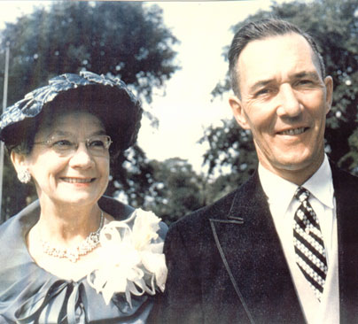

| Christine Honora Burns was born in 1896 to Irish immigrants Catherine and Michael Burns. |
|
|
 |
She met Robert Brown and they were married September 20, 1924. That year they also built a home in Syracuse, NY, where they lived for the rest of their lives. Together they had four children: Dick, Ginny, Bea, and Bobbie. She lost her husband in March of 1972 and died herself a month later, April 13th, 1972. |